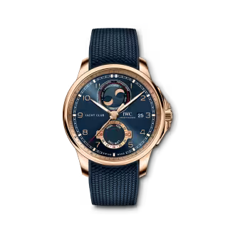

THE PORTUGIESER WATCHES COLLECTION
- 1939
- -
- 1993
- 1995-1
- 1995-2
- 2000
- 2003
- 2004
- 2010
- 2011
- 2015
- 2018
- 2020
-
1939
At the end of the 1930s, IWC built at the request of two Portuguese merchants, a large wristwatch with the precision of a pocket watch. For this purpose, they used the pocket watch movement calibers 74 and 98. The noticeably large and striking wristwatch first was launched in 1939.
Portugieser Reference 325 -
DESIGN HIGHLIGHTS
-
1993
On the occasion of the company’s 125th anniversary, IWC decided to bring the special large Portuguese watch back to life with a new limited edition. A special feature was the view of the movement through a transparent sapphire-glass back. The calibre 9828 in the modern Portuguese was based on the original pocket watch calibre 98.
Portugieser Anniversary Wristwatch -
1995-1
Shortly after the market launch of the Portuguese anniversary watch in 1993, a movement fulfilling the most exacting demands of high-end watchmaking began to appear in the collection: the Portuguese Minute Repeater (Reference 5240).
Portugieser Minute Repeater -
1995-2
A watch “that had never existed before, even back then” was the slogan at the unveiling of the Portugieser Chrono-Rattrapante (Reference 3712). It was an apt statement because it was the first time a Portugieser and a chronograph had been combined in the same case, and the result needed to be something extraordinary.
Portugieser Chronograph Rattrapante -
2000
To mark the start of the new millennium, IWC decided to write a new chapter in the history of Schaffhausen in the year 2000: the Portugieser Automatic 2000 (Reference 5000), with a completely newly designed movement. The 5000 calibre contained a power reserve of 7 days and the Pellaton winding system.
Portugieser Automatic 2000 -
2003
In 2003 IWC launched the Portugieser Perpetual Calendar (Reference 5021). In a unique and very special way, this timepiece embodied all the watchmaking expertise of the Schaffhausen company. IWC combined its in-house 5000 caliber with the perpetual calendar module developed by Kurt Klaus.
Portugieser Perpetual Calendar -
2004
With its iconic design, the Portugieser family had included almost every imaginable classic complication in the history of watchmaking. In 2004 the most mythical of them all, the tourbillon, was introduced. The Tourbillion Mystere (Reference 5042) was based on an IWC in-house construction from the 1990s.
Portugieser Tourbillon Mystère -
2010
The Portugieser Yacht Club Chronograph (Reference 3902) is the sportiest timepiece in a watch family steeped in tradition. Originally, the Yacht Club was first launched in 1967 and became one of the most successful IWC watches of the 20th century. IWC decided to integrate the “new” generation of Yacht Club models into the Portugieser family.
Portugieser Yacht Club Chronograph -
2011
In 2011, IWC bestowed upon the watchmaking world a masterpiece of haute horlogerie. The Portugieser Sidérale Scafusia (Reference 5041) represents 10 years of solid development work by a team of engineers, watchmakers and scientists. It is the most exclusive and complicated mechanical watch ever made by IWC.
Portugieser Sidérale Scafusia -
2015
In 2015, IWC celebrated the 75th year of the Portugieser. The newly developed annual calendar complication displayed the month, date and day in three separate windows on the dial and required a manual adjustment just once every year.
Portugieser Annual Calendar -
2018
To mark its 150 year anniversary, IWC Schaffhausen presented the Portugieser Constant-Force Tourbillon Edition “150 Years”. Limited to just 15 pieces, this stunning platinum timepiece features a white dial with a lacquer finish and blue hands. The manufacture calibre 94805 combines for the first time a constant force tourbillon with a single moon phase display that needs to be corrected by just one day every 577.5 years.
Portugieser Constant-Force Tourbillon Edition “150 Years” -
2020
The Portugieser Yacht Club Moon & Tide represents a technical highlight. For the first time, in this model, IWC presents its newly developed tide indicator. A totalizer at “6 o’clock” shows the times of high and low tide. Positioned at “12 o’clock” is an IWC speciality, the double moon phase display. It has been expanded to show the spring and neap tides and thus provides more information about the strength of current tides.
 Portugieser Yacht Club Moon & TIDE